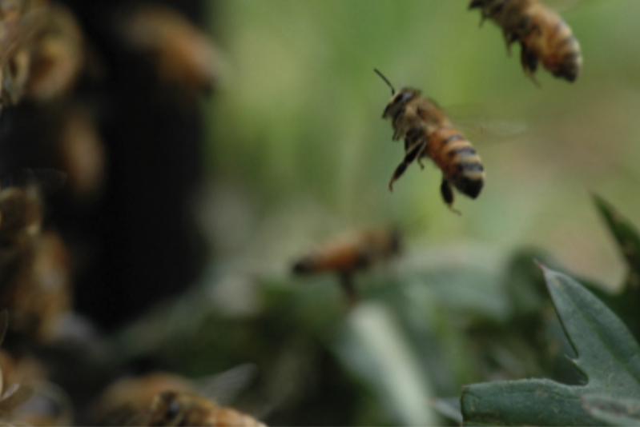
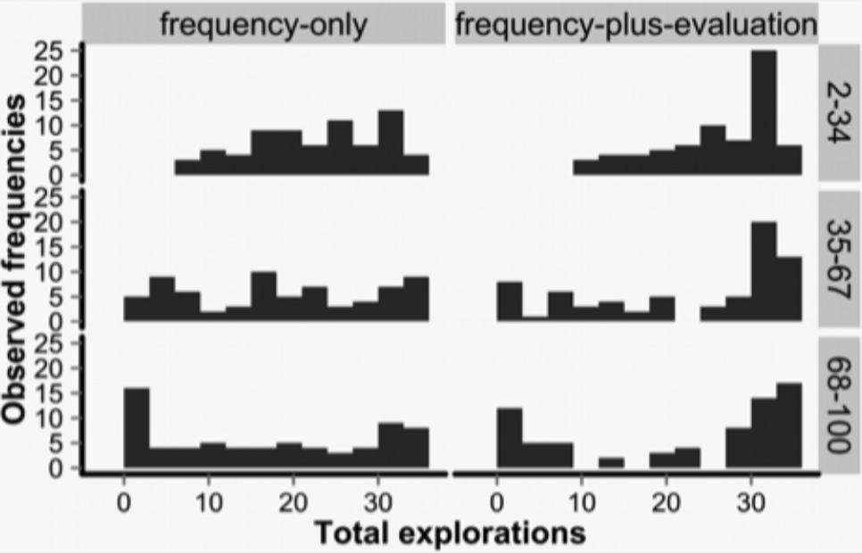

Research 01
Collective Intelligence
1. Exploring behavioral-cognitive algorithms for “collective intelligence”
The problem of how to effectively aggregate information from a wide variety of sources and the diverse preferences displayed by individuals in order to make better social decisions is one of the most important topics for the social sciences to address in the 21st century. Consequently, in this project, we seek to investigate the behavioral-cognitive algorithms that enable the emergence of “collective intelligence” in human groups. In particular, our research efforts are strongly informed by ongoing research on “swarm intelligence” – a topic of considerable attention in biology and informatics fields. Social insects, such as honeybees and ants, display an impressive array of collective performance abilities when determining a new nest site and engaging in social foraging, even though each individual insect possesses only a very limited cognitive capacity. By collaborating with researchers on ants and combining mathematical models, computer simulations, inter-species experiments and internet experiments, we are investigating the cognitive and ecological conditions that foster the emergence of collective intelligence in human groups. This project is expected to yield fundamental knowledge about the behavioral-cognitive algorithms for collective intelligence, as well as practical implications concerning the most efficient means to aggregate individual information on the internet and promote effective consensus-building in our societies.  
Grant-in-Aid for Scientific Research (A) “Mechanisms of collective decision making: Understanding key conditions for collective intelligence by computational modeling” (PI: Tatsuya Kameda, 2023-2027)